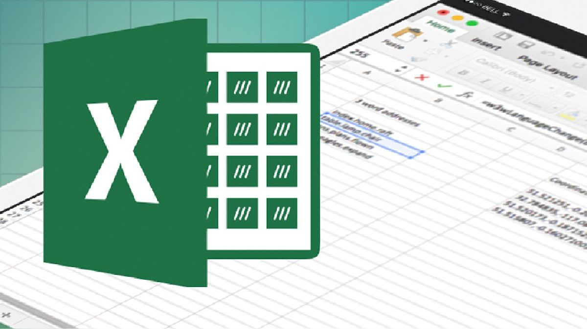

Se aprendió a crear documentos, dar formato, insertar imágenes y tablas, así como organizar información en documentos digitales.

Se trabajó con tablas, fórmulas básicas, gráficos y organización de datos, utilizando herramientas como Excel.

Ver video de una macro realiza en excel:
| Módulo | Submódulo | Descripción |
|---|---|---|
| Procesador de texto | Formato de documentos | Uso de herramientas para editar textos |
| Hojas de cálculo | Fórmulas básicas | Operaciones y organización de datos |